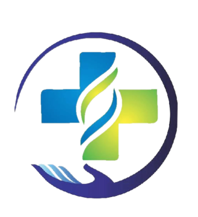
15+ years of internal medicine and critical-care expertise at the Arogya Speciality Clinic, Belagavi — from diabetes reversal to on-site 2D ECHO diagnostics, delivered with calm, evidence-based clarity.
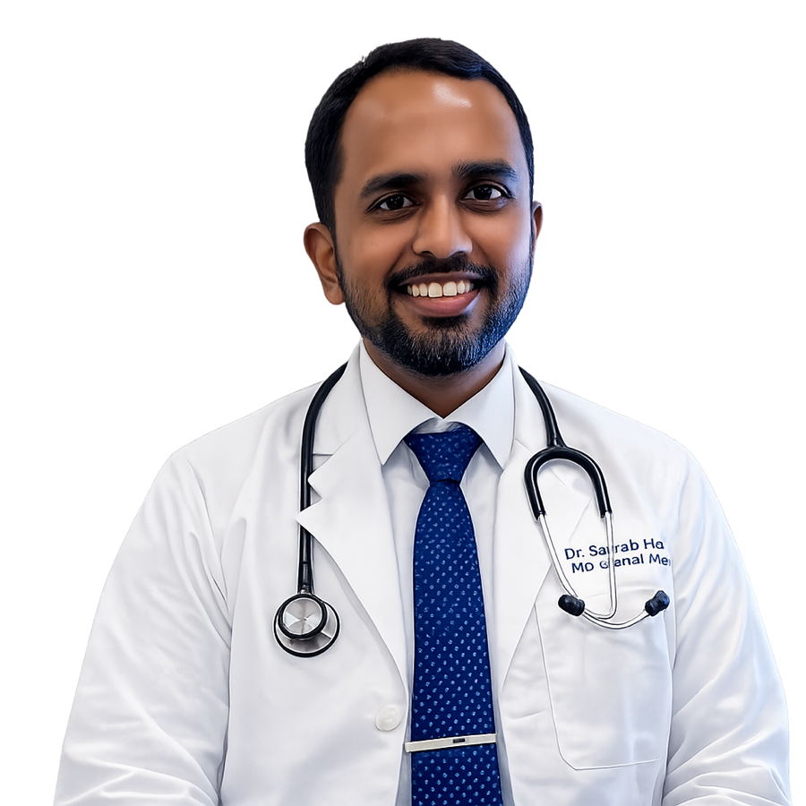
Rank holder, researcher, teacher and intensivist — guided by Stoic philosophy and a belief that patients deserve clarity, not jargon.
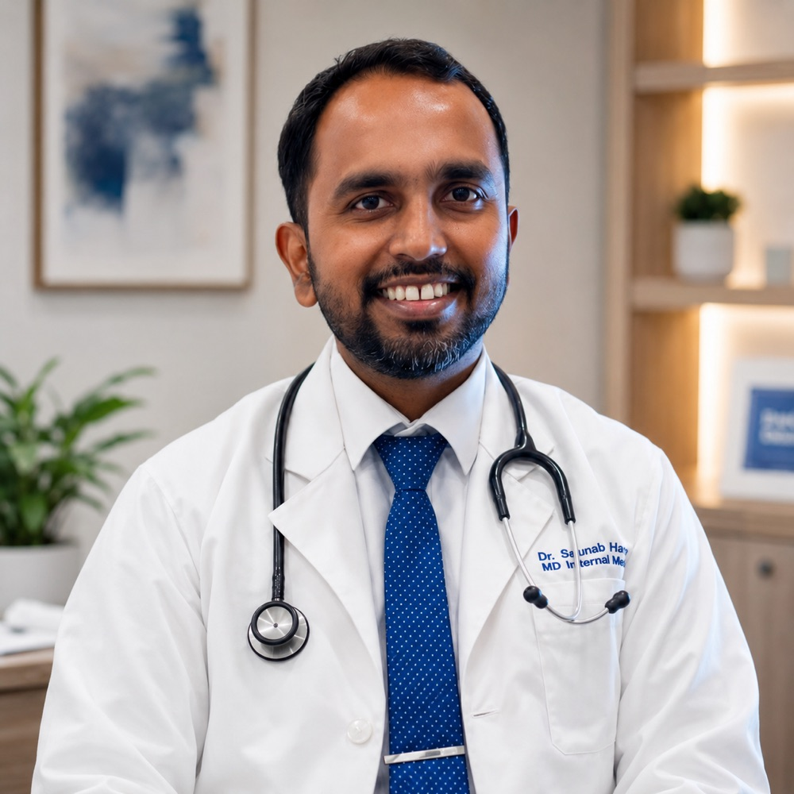
District topper at St. Paul's High School (1990), Belgaum. First rank in MD General Medicine across the entire RGUHS university network. Internationally certified by the Royal College of Physicians, Glasgow. Dr. Sourab Hiremath's career is a study in sustained excellence.
After his MBBS at Jawaharlal Nehru Medical College, Belagavi, and MD at Father Muller Medical College, Mangalore, he deliberately chose breadth — rotating through HCG Cancer Care, Hubli (oncology emergencies) and Yashoda Multispeciality & Nephrology Centre, Bijapur (renal failure & dialysis), building the intensivist instincts that power his practice today.
His journey began in 2014 at Holy Cross Multispeciality Hospital, Chikmagalur — single-handedly running and shaping a nascent ICU. A decade and nine institutions later, he serves as Associate Professor of Internal Medicine at USM-KLE, Belagavi, mentoring the next generation of physicians while running the Arogya Speciality Clinic. In his own words: "This voyage isn't just about healing; it's about connecting, teaching, and lifelong learning."
Off duty: basketball, classic and contemporary literature, and the quiet discipline of Stoicism.
"Calmness, resilience and practical wisdom — medical decisions guided by reason and evidence, never by panic." — The Stoic approach to critical care
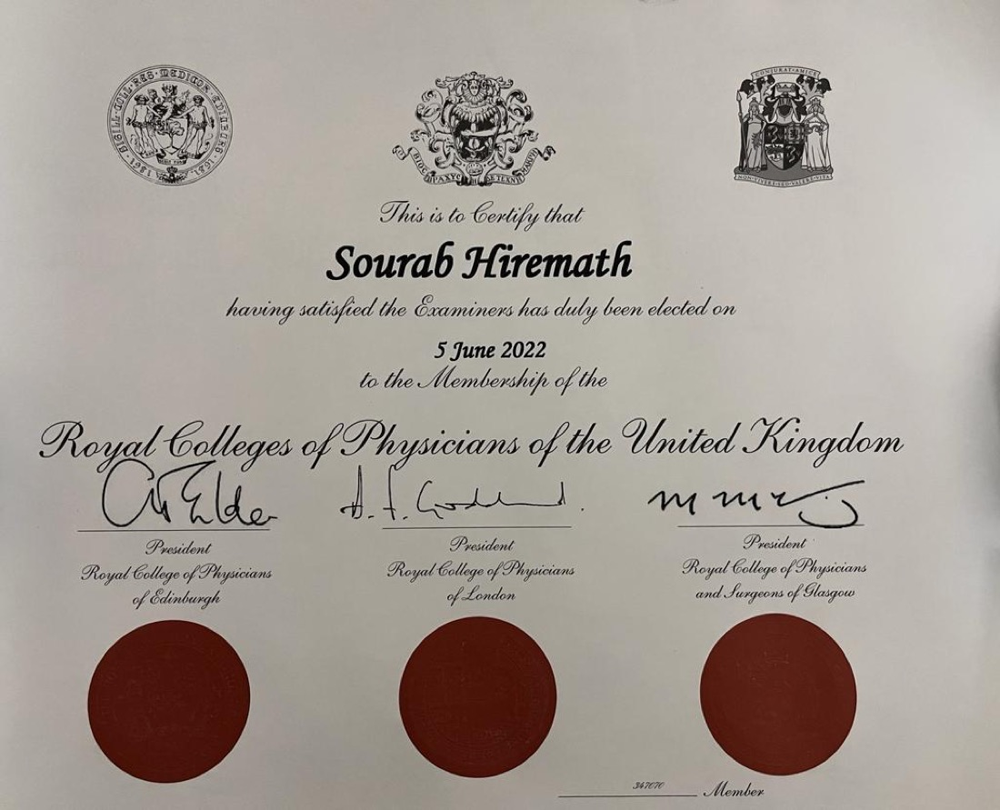
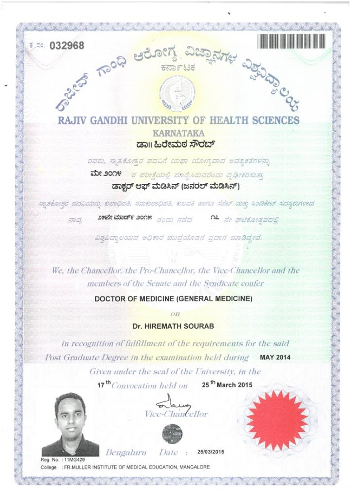
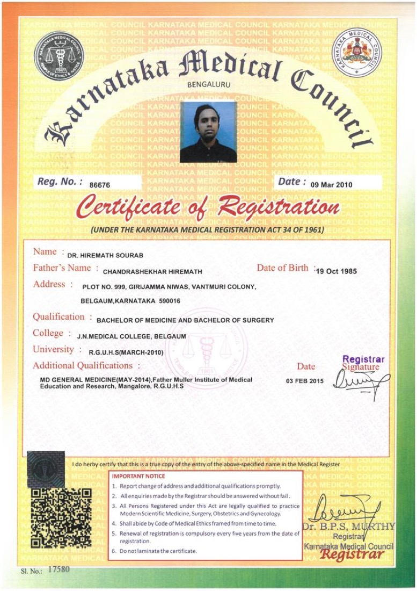
Four integrated service blocks — metabolic, cardiac, neurological and acute care — with on-site diagnostics, so Belagavi doesn't have to travel to a metro for coordinated care.
Care in safe hands — a patient-first clinic combining specialised diagnostic technology with a personalised, philosophically-grounded approach to medicine.
Beyond glycemic control — remission-focused care for the 20,000+ diabetic patients managed over 15 years. Aggressive lifestyle modification targeting insulin resistance itself, with integrated thyroid co-management.
Cost-effective 2D Echocardiography performed on-site — immediate bedside assessment of heart failure, valvular disease and hypertensive heart disease, paired with long-term prevention of stroke and cardiac events.
Localised, expert management of two of India's leading causes of long-term disability — without the journey to a metro. Structured stroke-recovery pathways, epilepsy control and migraine therapy under one consultant.
Evidence-based management of tropical fevers — and the intensivist's edge when dengue or malaria escalates. Fevers of unknown origin met with the deep differential-diagnosis skill of a seasoned physician.
Arogya Speciality Clinic
Opposite Shiva Hotel, above Royal Enfield Showroom, Ayodhya Nagar, Sadashiv Nagar, Belagavi, Karnataka 590010, India ↗
Mon – Fri: 12:00 – 2:30 PM & 4:30 – 7:30 PM
Saturday: 2:00 – 7:30 PM
Sunday: Closed
Phone: +91 98453 21622
Email: drsourabmd@gmail.com
Remote consultations available for patients outside Belagavi — and outside India.
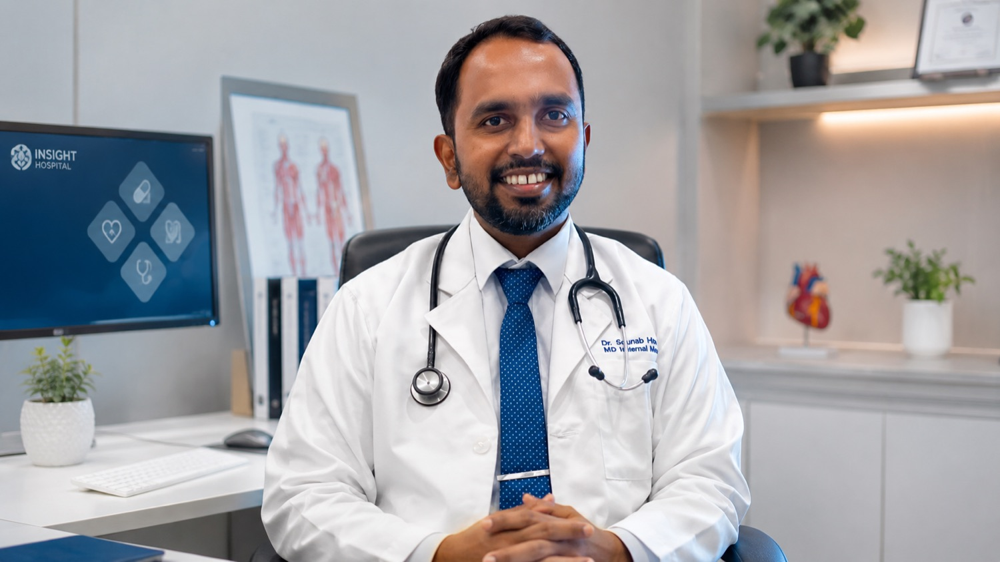
Tap any condition to see its symptoms, signs, treatment and long-term management. Educational only — always get a personalised doctor's opinion first.
Always get a personalised doctor's opinion first — and trust only that. The information below is general education. Every patient's body, history and risks are different; what's right for one person can be wrong for another. Let Dr. Sourab assess your case before acting on anything here.
Think this matches what you're experiencing? Don't self-diagnose — book a consultation and get an answer you can trust.
Get a Personalised OpinionAssociate Professor of Internal Medicine at USM-KLE, Belagavi — with publications in the International Journal of Medicine and the Asian Journal of Medical Sciences.
"He explains the ailment and the treatment in a very simple way — no jargon, no fear. For the first time I actually understand my diabetes."
"Diagnosed my condition correctly from symptoms alone while I was outside India. His clinical sense over a remote consult was remarkable."
"He spoke to my mother in fluent Marathi and to me in English. The comfort that gives a family during a health scare is hard to describe."
A look inside the Arogya Speciality Clinic — the consultation room, the certificate wall, and bedside diagnostics in action.
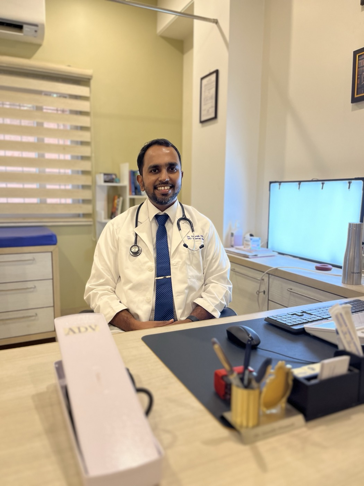
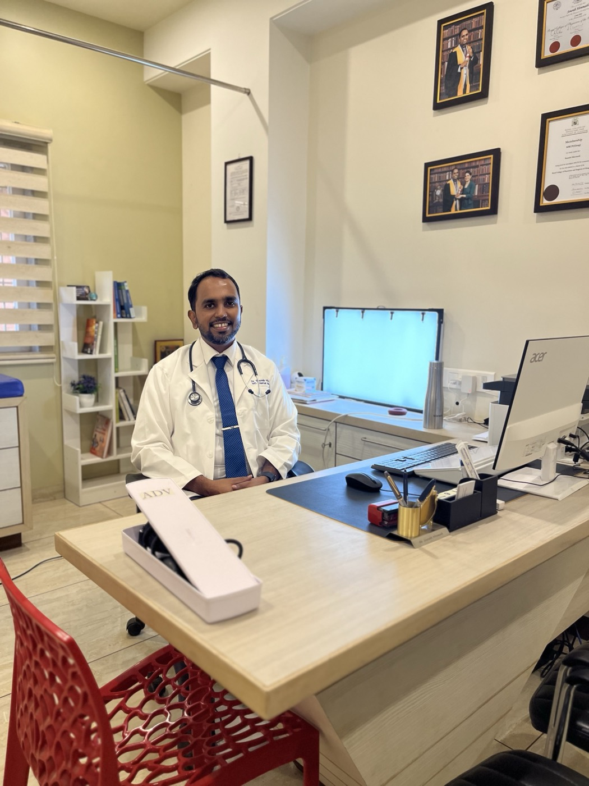
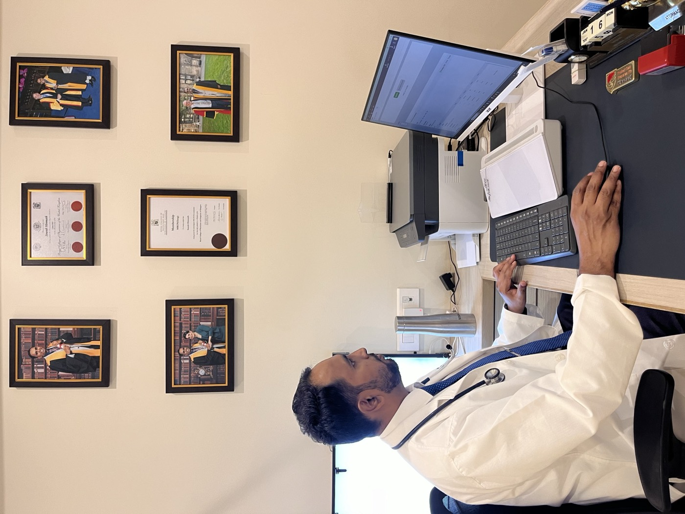
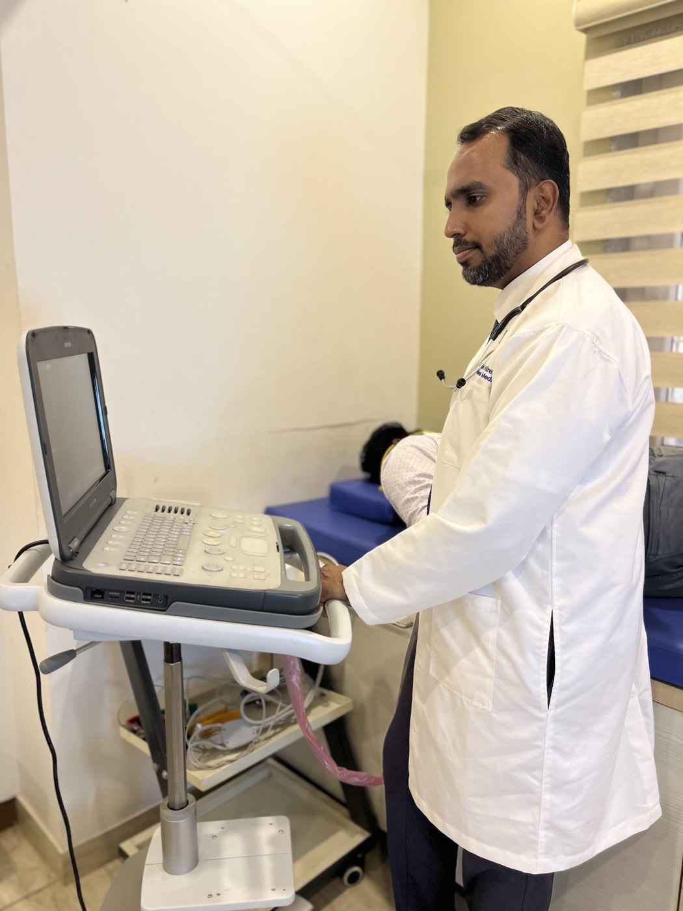
Share your health concern and preferred time — the clinic will confirm your slot. Consultations available in English, Hindi, Kannada, Marathi and Malayalam, in person or remotely.